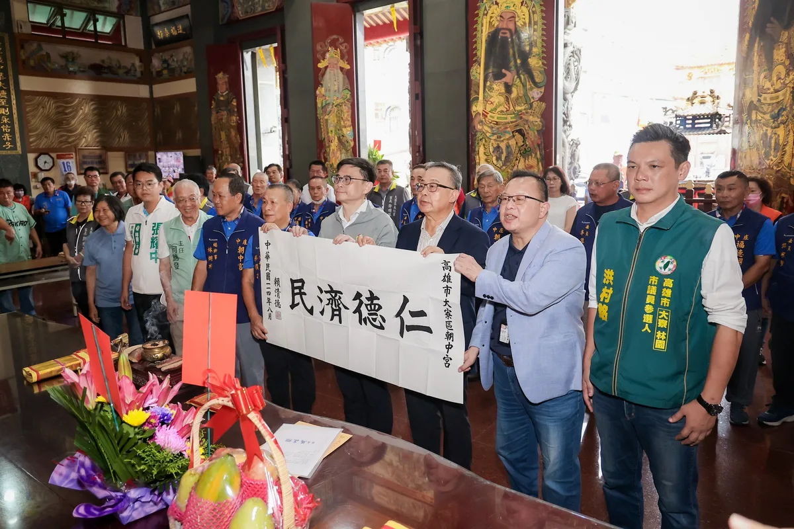
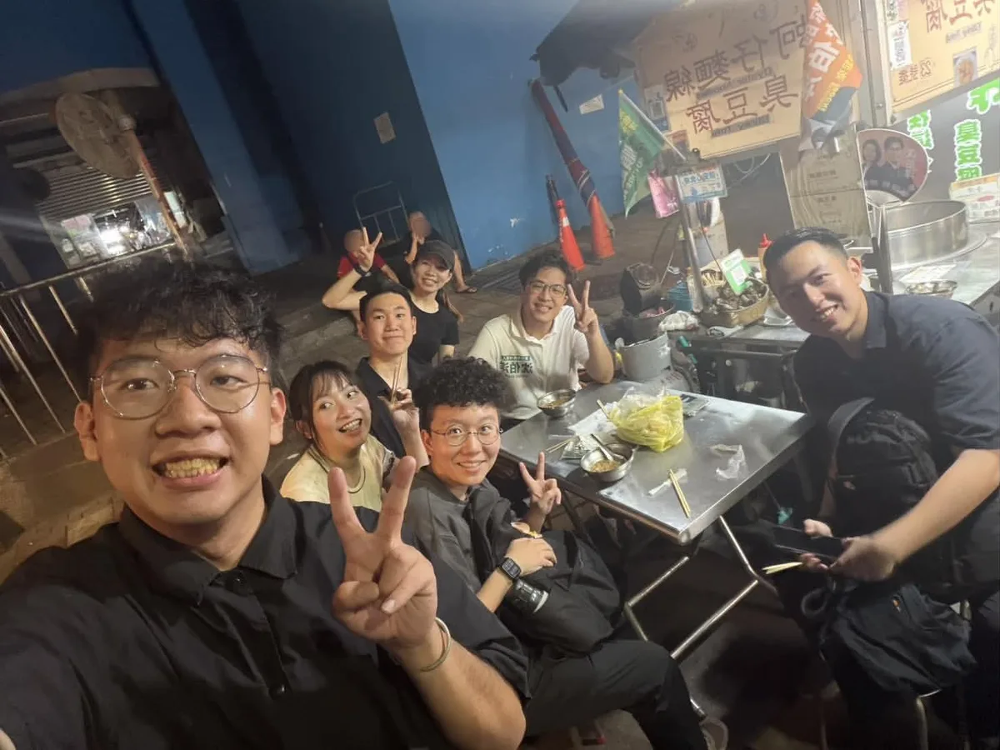
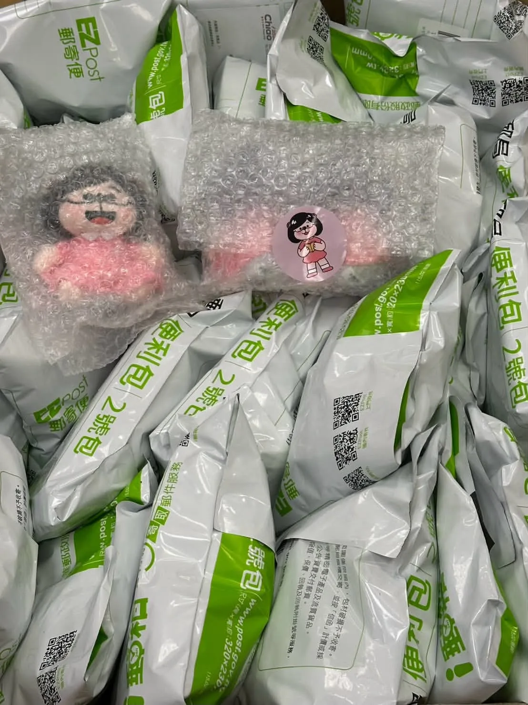
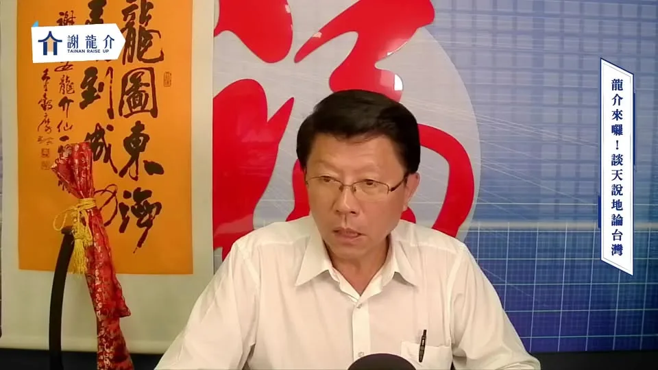
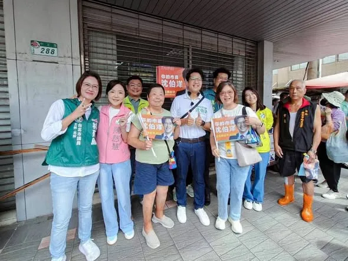

何欣純a_chun1973

@a_chun1973:明天見。
Posts
@a_chun1973:明天見。


亭妃來到官田，見證隆田里活動中心新建工程動土！ 一磚一瓦，都是鄉親對未來生活的期待。未來完工後，將提供更完善的活動與交流空間，讓社區更有活力、居民生活更便利。 #陳亭妃 #台南400第一女市長 #官田 #隆田里活動中心 #一棒接一棒

我要推動 #20分鐘生活圈，讓市民能把更多時間留給家人，從生活機能、交通、產業到城市治理，重新盤點臺中的生活需求。 ✨補足生活機能 盤點綠地公園與食衣住行育樂需求缺口，讓市民在20分鐘生活圈內，就近滿足各種日常需求。 ✨改革公車路網 拚藍線完工、捷運多線齊發；捷運路網成形前推動公車免費，並建立五大生活圈轉運中心，加密班次，串聯住宅區、醫院、商圈與青年基地。 ✨打造五大生活圈品牌 發展山城、海線、屯區、市區、高鐵門戶特色，結合智慧農業、海洋科技、精密機械、會展文化、智慧物流等產業，增加青年留下發展的機會。 ✨導入AI智慧治理 結合 AI 與 GIS，建立「大臺中生活圈幸福指標」，用大數據檢視交通、公共服務及食衣住行就業需求。 讓每個生活圈都有完整機能，打造更便利、更宜居的臺中！ #臺中啟程 #打造旗艦城

今天從中壢華勛市場到八德公有市場，走進大家每天採買、吃早餐、話家常的地方，也聽見許多最貼近生活的聲音！ 一早來到華勛市場，沿路和攤商、買菜的鄉親打招呼，收到好多特別的祝福。有人送來鳳梨、粽子、蒜頭，還有可愛的蒜頭吊飾，甚至有支持者特別帶著「杰伴童行」貼紙來合照，大家的熱情讓一早的掃街行程活力滿滿🫶🏻 接著來到八德公有市場，感受市場與周邊居民緊密相連的生活日常。收到鄉親送來蘿蔔和竹筍祝福，結束後我們到在地超過30年的「50巷麵店」，邊吃麵邊聊地方事，來場最在地的早餐聚會。遇到很多市民朋友，大家都是巷仔內的！ 中壢、八德快速發展，人口持續移入，交通問題是居民的日常，捷運建設要如期如質、資訊公開透明，未來我也要把周邊道路、大眾運輸路網規劃好，讓建設真正接上市民每天的生活。大家關心的垃圾費隨袋徵收，在取得充分共識前，我也承諾停止推動。 感謝中壢中壢大姊姊張曉昀議員、魏筠議員、彭俊豪議員、黃崇真 Huang Chung-Chen議員，八德許家睿 Hsu Chia-Jui議員、市議員呂林小鳳議員、蔡永芳 • 阿芳議員候選人服務團隊、福興里姚成達里長、瑞豐里呂學琪里長，以及八德公有零售市場自治會邱秋珍會長一起同行。 心中壢、心八德，杰伴動起來💖

巧觀點 【開箱新北第一彈：你家隔壁】解答公布！ 現在就讓我們一起認識第一波藏寶點背後的故事，以及這次合作的創作者，也歡迎跟我分享你答對幾個喔！ 2026.09.17


香火萬年佑黎民，總統墨寶獻神祇💐 超過240年歷史的大寮朝中宮是地方信仰中心，陪伴一代又一代鄉親，見證大寮一路發展、成長。 一間廟宇守護地方，一座城市照顧每一個人的生活。今天來到朝中宮參香祈福，也代表 賴清德 總統致贈「仁德濟民」墨寶，感謝朝中宮長年守護地方、凝聚鄉親的力量。 這些年，大寮持續向前，從道路、排水、公園，到社會住宅、國道七號、捷運紅線延伸等重大交通建設，都有賴中央的支持，地方民眾的合作。 祈求玄天上帝庇佑台灣風調雨順、國泰民安。我會一直把鄉親的需要放在心上，讓不同世代都能在高雄安心生活，也願朝中宮香火萬年、神庥廣被。 高雄市議員 李雨庭 洪村銘 大寮林園要改變 ＃厝邊阿中張耀中

打造幸福感城市！路平、燈亮、水溝通

@prof.kochihen:彌陀・海尾橋🌊


@pumashen:公館夜市... 你們太猛了！ ⠀ 謝謝大家和我一起逛公館夜市 然後都有在夜市吃飽 記得要補充水分 ⠀ 我剛剛也和同仁們吃了晚餐 大家明天繼續加油 ⠀ 倒數74天！

20260915 談天說地論臺灣 @longmedia ｜龍介的直播

忠孝路夜市巧遇老字號青草茶！阿純一喝繼續活力滿滿🌿

【#開箱新北 第一彈：你家隔壁】解答公布！ 很開心看到大家熱烈參與開箱新北的藏寶計劃！這次我們帶大家走進新北各個角落，也期待透過一個個藏寶點的故事，讓大家認識新北不同地方的特色。 現在就讓我們一起認識第一波藏寶點背後的故事，以及這次合作的創作者，也歡迎跟我分享你答對幾個喔！ 開箱新北第一彈——土城原住民族生態公園 大家知道土城有座原住民族生態公園嗎？ 這座公園的前身是海山煤礦，曾經是台灣的第二大礦區。 當時礦主到花東招募礦工，使海山煤礦有六成都是阿美族人。1984年發生了海山礦災。 74名罹難者裡，大多都是阿美族礦工。 災變導致了海山煤礦最後也在1989年歇業，部分倖存的族人遷往現在的三鶯部落或南靖部落居住。這也是為什麼土樹三鶯現今是新北都市原住民人數最多的區域之一。 現在，土城原住民族生態公園是周遭都市原住民進行歲時祭儀的場地，同時也保留了海山煤礦礦災的說明，這塊土地承載了過去和現在的故事...。 開箱新北第一彈——樹林山佳陸橋 大家知不知道新北市的樹林，一個區就有樹林、南樹林、山佳三座火車站！ 其中的山佳火車站還保有1931年改建的舊站站房，建築反映了當時日本流行的和、洋、德式建築工法，非常特別。 而南樹林車站雖然是小站，但像是樹屋的車站建築非常美麗。在夜晚看起來是一座迷人的玻璃屋！南樹林車站緊鄰作為東部幹線發車點的樹林調車廠，所有沿著太平洋奔跑的火車，最後都要回到這裡整理、休息。 因此南樹林雖然是迷你小站，但站在月台上，卻可以就近看到各式各樣的火車：自強號、普悠瑪、太魯閣、區間車全部輪番上陣！ 另外啊！在這兩個車站之間還隱藏了一個讓火車迷激動的秘密景點：樹林中山路與東佳路的交叉口，有一座跨越樹林調車廠的綠色人行路橋。 陸橋下就是調車廠的廠房！站在陸橋上可以清楚的看見火車「張開嘴巴」維修、也可以看到辛苦的清潔人員仔細的整理內部的環境。對於喜愛火車的小朋友，這絕對是一處讓人流連忘返的地方！ 開箱新北第一彈——永和仁愛公園菜頭 不知道大家有沒有發現我們永和的仁愛公園出口有一個大菜頭？大菜頭旁邊有個解說碑文，上面寫著：「『溪州菜頭』在五〇年代為永和之特產」，而溪州其實就是永和的舊名。 這裡最原本住著平埔族龜崙蘭社、秀朗社，「龜崙蘭」有沙洲之意，因此，泛稱此地為溪洲。 因為由新店溪沖積成的沙壤土很適合蘿蔔生長，加上水利灌溉發達，全盛時期整個永和遍地都是大菜頭！過年的時候，永和的路上都是拉蘿蔔的板車，當時還普遍保有家戶自己做蘿蔔糕的習慣，家家戶戶就地取材，堆石作灶，製作簡單的蒸籠，整條街上都是香噴噴的蘿蔔糕香。 下次到仁愛公園走走，不要忘了來朝聖一下當年的永和特產「溪州菜頭」！ 開箱新北第一彈——板橋放送所 板橋放送所隱身在熱鬧的市區之中，路過可能只覺得它是一塊散落著老建築的綠地。 但其實，這裡曾經是台灣重要的「聲音放送基地」。放送所在日文裡是「廣播電臺」的意思。板橋放送所是日治時期全台負責廣播訊號傳送的地點之一。據耆老口述，會選擇此處設立，是因為位於板橋平原隆起處，對傳送音波比較有利。在那個沒有網路、電話也不普及的年代，廣播幾乎是人們接觸外界的唯一窗口。 這座歷經戰爭、戒嚴，也見證經濟起飛，再到電視時代的放送所，曾面臨被拆除的命運，幸好在文史團體的爭取下，改列為市定古蹟。 現在的放送所轉型成為文創場所，有表演團體進駐、舉辦藝術節等活動，水獺媽媽也曾跟小夥伴一起在這邊說故事！ 開箱新北第一彈——三鶯之心空間藝術特區 三鶯線通車營運後，你想去哪些地方玩？ 位於三鶯線上，鶯歌車站外的三鶯之心空間藝術特區，草地上坐落著數件陶瓷地景藝術裝置。其中，15公尺高的巨型手拉坏，更象徵著鶯歌製陶工藝的源起與輝煌。 緊鄰的新北美術館於2025年開館後，更讓鶯歌這座工藝之都，在傳統陶瓷與當代藝術間激盪出新的火花。園區不時有音樂展演、藝文市集，也很適合野餐、散步，還能沿著周邊自行車道遊訪陶瓷博物館與鶯歌老街。 這週末就搭乘三鶯線，帶著家人或約上三五好友，一起來這裡走走吧！ @hom_comicart #HOM 漫畫創作者，著有《大城小事》、《無價之畫—巴黎的追光少年》等，數次榮獲金漫獎。現於LINE WEBTOON每周日連載《課金派戀愛》。 @jeoyu #小心臟 插畫家，用創作表達情感，小心臟粉紅圓潤的身形裝滿豐富的情緒，用可愛陪伴大家的每一天。
【什麼事都不想做的時候，要怎麼讓心情重新好起來呢？】 適讀年齡：3-6歲，有附注音 ✏️ 本集台語小教室 使性地、公園、泅水、電影、看電影 《波波今天鬧彆扭》 文圖／ 娜塔莉亞．莎洛什維利譯／艾可 波波今天對什麼都有意見。他不想去公園玩、不想去游泳、也不想去看電影。波波到底怎麼了？他該怎麼擺脫鬧彆扭的情緒呢？ ＊故事由水滴文化授權使用＊ 👇 繪本這裡看：https://www.books.com.tw/products/0011037668 👇 更多親子大小事，請在 FB 搜尋： 水獺媽媽巧慧與他的好朋友 https://www.facebook.com/ottermamachiao 👇 寫信給水獺媽媽：100925 立法院郵局 第 27 號信箱 水獺媽媽收

@zenolai:洋流到港，隆捲風來襲！ 我們週六見！ @pumashen
@schuanglawyer:這週日晚上 要不要杰伴一起逛中壢夜市？

總部裡，還有超可愛的「妃熊幸福專區」🐻❤️ 從農家、豐漁、科技，到軍人、警察、鐵馬， 每一隻「妃妃泰迪熊」，都代表著不同的台南力量。 因為一座幸福的城市， 從來不是一個人完成的， 而是每一個認真生活、努力守護台南的人，一起堆疊出來的。 陪著妃妃一路向前， 一起把台南一點一滴堆疊成「妃熊幸福」的城市！✨

@hsiehlungchieh:打造幸福感城市！路平、燈亮、水溝通

彌陀・海尾橋🌊
@zenolai:前鎮漁港拚升級 創造千億產值 支持對台灣隱形冠軍的投資！ 最近，有人把前鎮漁港五大建設81億元大改造，簡化成「蚊子會館」，這是對遠洋漁業、對高雄產業不瞭解才會說出的話。 台灣遠洋漁業產值與漁撈能力位居世界前茅，上下游產業鏈涵括造船、水產、加工、補給，產值超過千億，前鎮漁港是台灣最大遠洋漁港，全台80%遠洋漁貨從前鎮裝卸處理加工，但過去五十年來沒有大規模整修，亟待重視支持。 擔任立委，全力爭取補助整修前鎮漁港，從爭取10億魚市場改建，到完整五大項81億全面改善，從魚市場整建、深水碼頭疏浚加深、雨污水下水道新設、港區道路環境整理，到船員服務空間升級，目的就是讓遠洋漁獲品質、衛生環境與作業流程跟國際標準接軌，讓台灣遠洋漁業繼續站穩國際市場，讓台灣國際形象提升。 今天我參加農業部在船員大樓舉辦的「前鎮漁港漁業產業發展與船員服務設施座談會」，多位在前鎮漁港工作超過30、40年的遠洋漁業前輩到場分享，清楚說明這81億投資的重要性。


「來！看這邊」，我把時間留給鏡頭，留給里長，為好友誼做見證。 今天我和新北市200多位里長，一起拍競選照，我遇到好多好朋友，也認識不少新朋友，我們都一起在努力向前走。 握拳、比讚、背靠背，或是人人都是花一朵，什麼姿勢我都OK，里長的活力，是我繼續拚的動力。 新莊中泰里長郭樹琳還特別帶了里民為我做的手工應援小物，上面有我、我的logo，原來就是用手搖旗縫製成的，有她的細心與貼心，讓我感到暖心。 新北29區，里長是我的貴人，他們是地方的眼與耳，哪條路壞了、哪盞路燈不亮，在第一現場紀錄社會變遷，提供市府好的建議，一起往對的方向前進。 我的筆記本裡，都是里長們的指教，非常榮幸能一起並肩拚戰，滿足地方的期盼，讓里民的日子過得順。 「吸氣、縮小腹、挺胸！」，我們里長聯誼會長一個一個都在旁邊盯場，我哪敢鬆懈，成果出來，每個人都像一朵花，都綻放得最開。 咱堂堂新北市，親像花當開。

@chen_tingfei:妃妃泰迪熊圖鑑繼續解鎖！🐻 前面已經有三位成員跟大家見面，今天登場的是「魔法妃妃泰迪熊」🪄✨ 接下來每天解鎖一隻！👀

我要推動 #20分鐘生活圈，讓市民能把更多時間留給家人，從生活機能、交通、產業到城市治理，重新盤點臺中的生活需求。 ✨補足生活機能 盤點綠地公園與食衣住行育樂需求缺口，讓市民在20分鐘生活圈內，就近滿足各種日常需求。 ✨改革公車路網 拚藍線完工、捷運多線齊發；捷運路網成形前推動公車免費，並建立五大生活圈轉運中心，加密班次，串聯住宅區、醫院、商圈與青年基地。 ✨打造五大生活圈品牌 發展山城、海線、屯區、市區、高鐵門戶特色，結合智慧農業、海洋科技、精密機械、會展文化、智慧物流等產業，增加青年留下發展的機會。 ✨導入AI智慧治理 結合 AI 與 GIS，建立「大臺中生活圈幸福指標」，用大數據檢視交通、公共服務及食衣住行就業需求。 讓每個生活圈都有完整機能，打造更便利、更宜居的臺中！ #臺中啟程 #打造旗艦城

讓每一位乘客安心到站，從解決駕駛長過勞開始！ ⠀ 跑行程時，常有長輩跟我說，搭公車最怕兩件事：人還沒坐穩，公車就開了；招手慢了一點，公車就過站了。 ⠀ 很多人會覺得，是公車開太趕。但我們更該追問，究竟是什麼原因，讓駕駛長不得不這麼趕？ ⠀ 2025年，台北市區公車發生900件事故，造成529人受傷。至於，百萬公里有責肇事率，也從前一年的2.15件增加到4.02件，接近翻倍。 ⠀ 同一時間，聯營公車駕駛長人數從4,047人減少到3,918人；公車相關陳情則平均每天超過100件。 ⠀ 人力不足、班表太緊，開慢了可能脫班，也壓縮駕駛長原本就不多的休息時間。 ⠀ 長期處在疲勞和趕班的壓力下，不僅乘客不安心，駕駛長也承受著龐大的身心壓力。 ⠀ 為了讓市民安心出門、平安回家，我提出四項台北公車安全改革： ⠀ ▎補貼駕駛長薪資，增加招募誘因 ⠀ 我將啟動精算評估，由市府補貼駕駛長薪資，吸引更多人投入公車駕駛長工作。 ⠀ 也和工時、休息時間等其他勞動條件連動，讓班表更合理、休息真正落實。 同時，檢討現行依里程計算的補貼方式，避免業者為了增加里程，維持過長或重複的路線。 ▎駕駛座導入人因工程，減少行駛資訊干擾 ⠀ 現在的公車駕駛座，裝有盲點偵測、碰撞警示、防夾系統和監視器畫面。 ⠀ 雖然，每一項設備都有安全考量，但全部疊加在一起，也可能分散駕駛長的注意力。 ⠀ 我將評估導入工程，邀集駕駛長、工會及專業團隊，共同檢視設備，整合重複資訊，讓重要提醒更清楚，也容易操作。 ⠀ ▎折返點設置休息站，讓駕駛長有時間喘口氣 ⠀ 不少駕駛長跑完一趟，很快又要返程，連喝水、上廁所或坐下來休息都很困難。 ⠀ 市府應盤點重要折返點、調度站及公有空間，設置駕駛長休息站，提供座椅、飲水及如廁空間。 ⠀ 另外，班表也要保留足夠的休息時間，讓駕駛長跑完一趟，真的能停下來喘口氣，再安全上路。 ⠀ ▎重新整理公車路網，減輕駕駛長趕班壓力 ⠀ 依據各站、各時段的載客資料分析，與業者、市民充分討論，並分階段試辦，滾動調整！ ⠀ 低運量的路段或時段，可評估改用小型巴士或預約式服務。路線調整前，先盤點醫院、長照機構、學校及社福據點，確保不影響市民日常生活。 ⠀ 重建台北公車的安全與信任。我會從改善工作環境做起，讓駕駛長專心開車，把每位乘客平安送到站！ ⠀ #台北順起來 #你的市長沈伯洋


市長，我給你聽好的！

@su.chiaohui:水獺媽媽玩偶今天寄出囉！ 非常感謝大家的支持，小隻水獺媽媽玩偶目前暫時已經沒有了，剩下限量大隻水獺媽媽玩偶，歡迎大家9/20來水獺媽媽數感樂園，把最後的水獺媽媽玩偶帶回家！

Building a Happy City! Smooth Roads, Bright Lights, and Clear Drains
打造幸福感城市！路平、燈亮、水溝通

⚡往生沒現金，急提存款辦喪葬竟被告？繼承官司真實案例曝光！😰 ✍️司法改革黨秘書長張烱春/阿春哥，以前沒事總愛翻六法全書，加上從2011年擔任北屯第一屆里長，到現在處理過里民各種疑難雜症的實際案例，昨天9/15又來到台中法院，關心協助民眾所正在面臨的法律案件。 😭這是昨天9/15打電話給我們的民眾，下午阿春哥/張烱春趕到台中地方法院關心。 一位母親含辛茹苦養大的兒女們，老公突然離世，因為沒有現金辦喪事，到銀行提領現金，被兒女們告。😱 ⚡家人過世，帳戶沒現金，喪葬費怎麼辦？ 😱一不小心「私自提領」，竟可能變成偽造文書、侵占官司！ ✅台中市議員參選人、司法改革黨秘書長張烱春/阿春哥，以真實案例告訴你： ✅ 一定要開家族會議 ✅ 取得白紙黑字書面同意 ✅ 再代理處理，才不會惹上官司 👥你家也有難念的經嗎？留言告訴我，或分享給需要的朋友，讓更多人避開法律陷阱！ 🙏11月28日，拜託支持張烱春，進入市議會為人民發聲！ 📌 真實案例｜法律防身術 #繼承官司 #喪葬費 #偽造文書 #侵占 #家族會議 #法律與生活 #張烱春 #阿春哥 #司法改革黨 #台中市議員參選人 #過世沒有現金存款如何辦喪葬費 #法律案例 #台中市雅潭神市議員參選人 #阿春哥向前行 #阿春哥監督市政

20260915 談天說地論臺灣｜龍介的直播

士林華榮市場，從早到晚，有兩種完全不同的熱鬧。 ⠀ 早上是菜市場，蔬菜、鮮魚、肉品，撐起士林人的一日三餐；傍晚攤位換班，甜不辣、水煎包、香腸陸續開張，成為在地人才知道的美食街。不少攤商在這裡做了四、五十年，顧的不只是生意，也是幾代士林人的味覺記憶。 ⠀ 今天走進市場，沿路聽到的招呼聲，就是傳統市場最珍貴的人情味。攤商記得熟客要買什麼、居民也都願意停下來聊幾句生活。 ⠀ 我有一位助理的阿媽從小都會帶他來「華榮街」，聽說前天阿媽才在講「那麼小條，沈伯洋不會來啦！」原來，是因為阿媽前幾年開刀後不太出遠門，一直在等我們來。 ⠀ 我們一定會盡全力，走遍台北的大小市場。因為在市場，你可以聽見最在地的聲音！ ⠀ 謝謝每一位熱情打招呼、願意停下腳步的攤商與市民，也謝謝我們今天一起出動的士林北投小隊 士林北投林世宗議員、 林延鳳 議員、 陳慈慧 慈續服務 最貼心 議員、 陳賢蔚 議員、鍾佩玲 台北市議員，以及華榮市場自治會莊勝宏會長！ #台北順起來 #你的市長沈伯洋